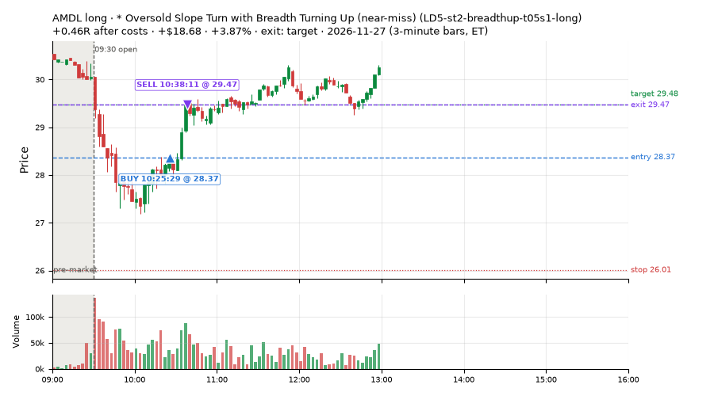
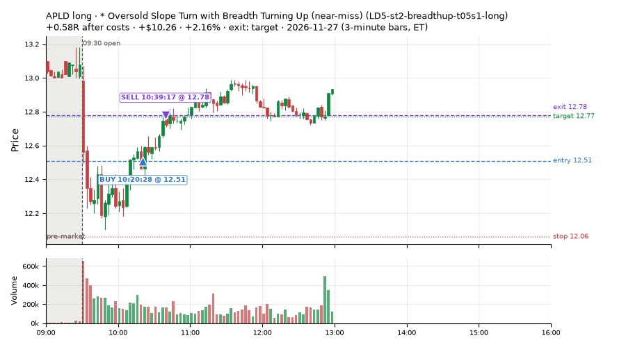
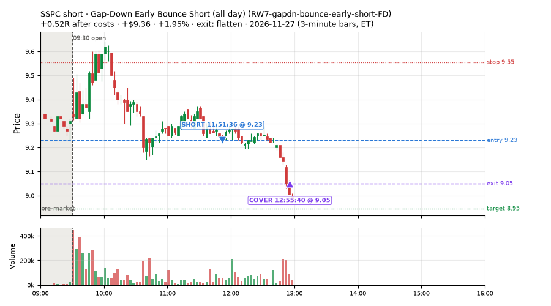
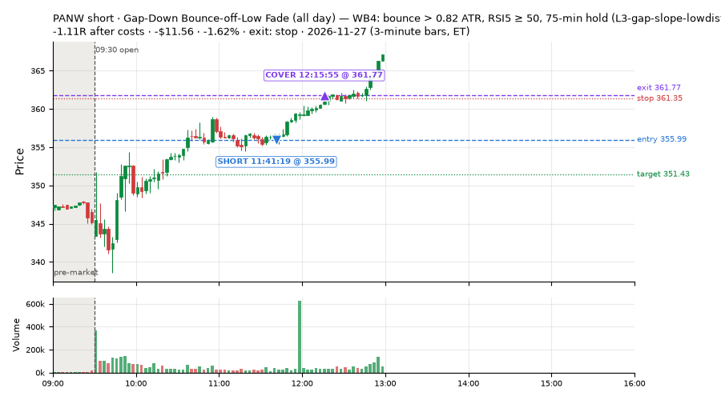
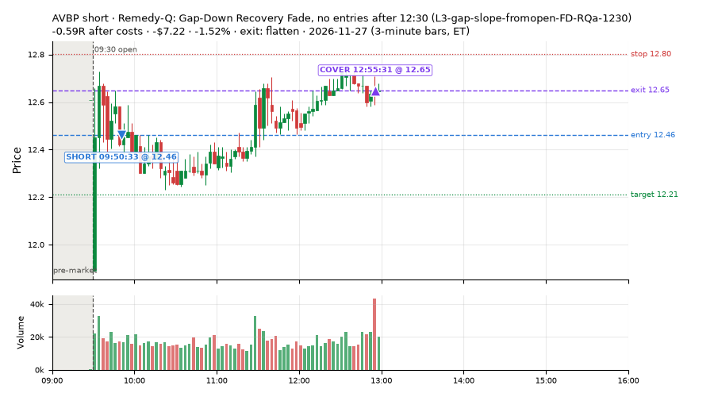
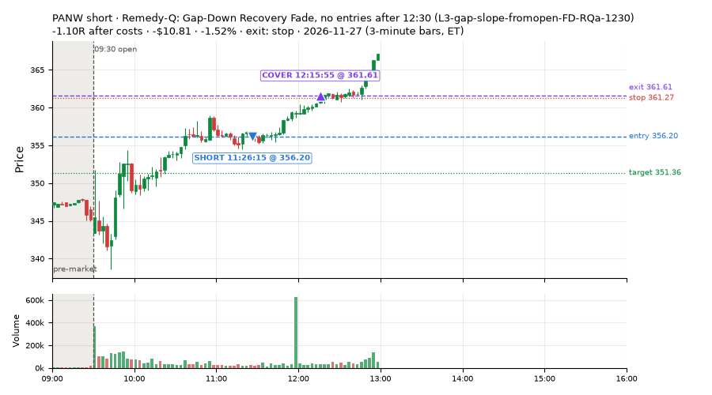
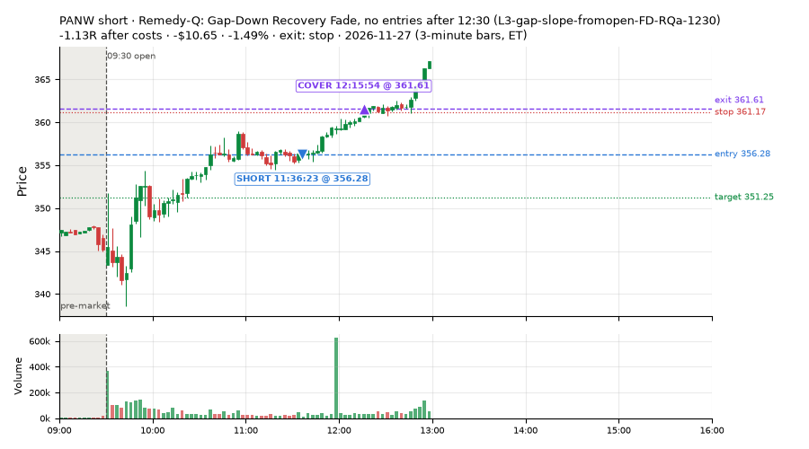
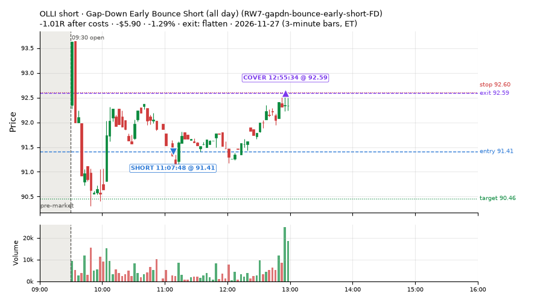

37 trades · win rate 41% · P/L $0.79
PROBATION: no live setup has passed both locked test periods. 10 owner-directed setups added 2026-10-08 (MarcoFlow top 5 + 5 new), untested live. RW6G1 (RW6 + VWAP band guard) added 2026-10-09, probation.

| Symbol | Setup | Side | In | Out | Entry | Exit | Exit reason | % gained | P/L |
|---|---|---|---|---|---|---|---|---|---|
| AMDL | * Oversold Slope Turn with Breadth Turning Up (near-miss) (LD5-st2-breadthup-t05s1-long) | long | 10:25 | 10:38 | 28.37 | 29.47 | target | +3.87% | $18.68 |
| APLD | * Oversold Slope Turn with Breadth Turning Up (near-miss) (LD5-st2-breadthup-t05s1-long) | long | 10:20 | 10:39 | 12.51 | 12.78 | target | +2.16% | $10.26 |
| SSPC | Gap-Down Early Bounce Short (all day) (RW7-gapdn-bounce-early-short-FD) | short | 11:51 | 12:55 | 9.23 | 9.05 | flatten | +1.95% | $9.36 |
| Symbol | Setup | Side | In | Out | Entry | Exit | Exit reason | % lost | P/L |
|---|---|---|---|---|---|---|---|---|---|
| PANW | L3-gap-slope-lowdist-FD-WB4 | short | 11:41 | 12:15 | 355.99 | 361.77 | stop | -1.62% | $-11.56 |
| AVBP | L3-gap-slope-fromopen-FD-RQa-1230 | short | 09:50 | 12:55 | 12.46 | 12.65 | flatten | -1.52% | $-7.22 |
| PANW | L3-gap-slope-fromopen-FD-RQa-1230 | short | 11:26 | 12:15 | 356.20 | 361.61 | stop | -1.52% | $-10.81 |
| PANW | L3-gap-slope-fromopen-FD-RQa-1230 | short | 11:36 | 12:15 | 356.28 | 361.61 | stop | -1.49% | $-10.65 |
| OLLI | RW7-gapdn-bounce-early-short-FD | short | 11:07 | 12:55 | 91.41 | 92.59 | flatten | -1.29% | $-5.90 |








Signal to fill: median 1s, 90th percentile 3s (37 trades). Bars close each minute; the order follows the bar close.
Best excursion (MFE): median 0.49R; worst (MAE) median 0.52R. 35% of trades never got +0.25R in our favour; 0 reached +1R and still closed at or below 0.
| Symbol | Setup | Best R | Worst R | Closed R |
|---|---|---|---|---|
| THRM | GEN-261022-07-Z12lem1p9-FlowShiftlem0p96-ATRdge3p6-AM-BRopgt0p5-t1s1-short | +0.73 | -1.26 | -1.42 |
| PANW | L3-gap-slope-fromopen-FD-RQa-1230 | +0.18 | -1.06 | -1.13 |
| PANW | L3-gap-slope-fromopen-FD-RQa-1230 | +0.20 | -1.03 | -1.10 |
| LINE | GEN-261022-07-Z12lem1p9-FlowShiftlem0p96-ATRdge3p6-AM-BRopgt0p5-t1s1-short | +0.80 | -0.65 | -0.47 |
| AVBP | L3-gap-slope-fromopen-FD-RQa-1230 | +0.68 | -0.82 | -0.59 |
| Entry time | Trades | Win | Avg R | P/L |
|---|---|---|---|---|
| 09:50-10:30 | 13 | 69% | +0.25 | $57.09 |
| 10:30-11:30 | 14 | 7% | -0.54 | $-42.04 |
| 11:30-13:00 | 10 | 50% | -0.13 | $-14.26 |
| Setup | Trades | Win | Avg R after costs | Adj R (net of SPY) | Avg R ex-market (all sessions) | P/L |
|---|---|---|---|---|---|---|
| 15-Minute Opening Range Breakout, Wide Stop (beginner) (BEG-ORB-orb15-inplay-stopOR) | 2.0 | 50% | +0.09 | +0.13 | – | $0.92 |
| Failed Prior-Day-Low Break Long (0.1 ATR, low vol) — WB3: stop 0.45 ATR + gap-down >= 0.5% (CWT14-failbrk-pdl-p10-lowvol-long-WB3) | 1.0 | 0% | -0.54 | -0.80 | -0.04 (beta +0.48, n 171) | $-3.00 |
| Generated: Morning Breakdown Short (volatile) (GEN-261022-07-Z12lem1p9-FlowShiftlem0p96-ATRdge3p6-AM-BRopgt0p5-t1s1-short) | 6.0 | 17% | -0.40 | -0.27 | -0.61 (beta +0.24, n 12) | $-11.15 |
| Remedy-Q: Gap-Down Recovery Fade, no entries after 12:30 (L3-gap-slope-fromopen-FD-RQa-1230) | 6.0 | 33% | -0.29 | -0.25 | -0.87 (beta -0.19, n 103) | $-28.81 |
| Gap-Down Bounce-off-Low Fade (all day) — WB4: bounce > 0.82 ATR, RSI5 ≥ 50, 75-min hold (L3-gap-slope-lowdist-FD-WB4) | 1.0 | 0% | -1.11 | -1.07 | -0.32 (beta -1.08, n 199) | $-11.56 |
| * Oversold Slope Turn with Breadth Turning Up (near-miss) (LD5-st2-breadthup-t05s1-long) | 5.0 | 100% | +0.52 | +0.44 | +0.14 (beta +0.95, n 9) | $52.89 |
| Quiet Downtrend Bounce Short (near-miss) (NM-AMS-N1-quiet-morning-short) | 1.0 | 100% | +0.57 | +0.63 | +0.34 (beta +0.10, n 8) | $8.26 |
| Gap-Down Early Bounce Short (all day) (RW7-gapdn-bounce-early-short-FD) | 15.0 | 33% | -0.21 | +0.08 | -0.13 (beta -0.71, n 482) | $-6.76 |
Market direction (SPY, beta 1) accounted for $-22.04 of today's $0.79; the rest ($22.83) came from the setups themselves. Avg R net of SPY: -0.02 (incl. a hedge leg's cost; report only).
22 setups live today. Today: 113 signals, 37 taken, 4 lost because another setup held the symbol (4%). Since 2026-11-12 (11 sessions): 3515 signals, 1377 taken, 43 lost to other setups (1%). Peak open positions today 25 of 400 slots. Earnings blackout removed 138 symbols before scanning.
Simulated playing time (not live): 2132 what-if trades of signals not taken, avg -0.37R, 34% winners; of them 43 lost to another setup (avg -0.67R).
Silent: GEN-261029-05-BearDiv-RSI14ge78-Compress6le0p091-AM-BRopgt0p5-t05s05-long, GEN-261028-04-ORBfailUp-RSI14le22-Gaplem1p2-LATE-BRvwgt0p5-holdtr-long · Starved: MF1-945-flowsell-vwapup
| Prio | Setup | Today sig / taken | Sessions | Signals / taken / trades | Taken/day | Expected/day | Lost to other setups | Lost to (setup n) | Top skip reasons | SIMULATED: not-taken n / avg R / win | Verdict |
|---|---|---|---|---|---|---|---|---|---|---|---|
| 1 | Remedy-Q: Gap-Down Recovery Fade, no entries after 12:30 L3-gap-slope-fromopen-FD-RQa-1230 | 33 / 6 | 4 | 605 / 103 / 103 | 25.75 | – | 22 | L3-gap-slope-fromopen-FD-RQa-1230 22, L3-gap-slope-lowdist-FD-WB4 9 | spread / quote / size 215, other 169, not shortable / shorts off 96 | 501 / -0.90R / 8% | ok 128.8 entries/week |
| 2 | Gap-Down Bounce-off-Low Fade (all day) — WB4: bounce > 0.82 ATR, RSI5 ≥ 50, 75-min hold L3-gap-slope-lowdist-FD-WB4 | 3 / 1 | 8 | 688 / 199 / 199 | 24.88 | – | 1 | L3-gap-slope-fromopen-FD-RQa-1230 1 | other 160, spread / quote / size 154, not shortable / shorts off 145 | 488 / -0.58R / 21% | ok 124.4 entries/week |
| 3 | Failed Prior-Day-Low Break Long (0.1 ATR, low vol) — WB3: stop 0.45 ATR + gap-down >= 0.5% CWT14-failbrk-pdl-p10-lowvol-long-WB3 | 1 / 1 | 8 | 255 / 171 / 171 | 21.38 | – | 5 | L3-gap-slope-lowdist-FD-WB4 4, RW7-gapdn-bounce-early-short-FD 1 | spread / quote / size 61, other 18, symbol held by another setup 5 | 83 / -0.05R / 70% | ok 106.9 entries/week |
| 4 | Gap-Down VWAP Loss Short (10% gap) — WB4: below open, real bounce, ADV 20M CWT09-gapdn-vwaploss-g10-short-WB4 | 4 / 0 | 8 | 53 / 4 / 4 | 0.50 | – | 0 | – | not shortable / shorts off 48, spread / quote / size 1 | 49 / -0.59R / 8% | slow 2.5 entries/week; ~24 weeks to 60 trades |
| 5 | Index Dip Bounce 3 3x S&P IDX3-spy075-0955-3x-trail | 0 / 0 | 11 | 2 / 2 / 2 | 0.18 | – | 0 | – | – | 0 / – | slow 0.9 entries/week; ~66 weeks to 60 trades |
| 6 | * Oversold Slope Turn with Breadth Turning Up (near-miss) LD5-st2-breadthup-t05s1-long | 9 / 5 | 11 | 13 / 9 / 9 | 0.82 | – | 0 | – | spread / quote / size 4 | 4 / +0.34R / 75% | slow 4.1 entries/week; ~15 weeks to 60 trades |
| 7 | Generated: Morning Overbought Coil Buy GEN-261029-05-BearDiv-RSI14ge78-Compress6le0p091-AM-BRopgt0p5-t05s05-long | 0 / 0 | 4 | 0 / 0 / 0 | 0.00 | – | 0 | – | – | 0 / – | silent no signals in 4 session(s); no expected rate on file |
| 8 | Generated: Late-AM Strong-Stock Dip Buy GEN-261021-05-RSIslopelem14-ORHdistge0p42-LAM-BRvwlt0p3-t1s05-long | 0 / 0 | 9 | 42 / 6 / 6 | 0.67 | – | 0 | – | other 25, spread / quote / size 11 | 36 / +0.32R / 56% | slow 3.3 entries/week; ~18 weeks to 60 trades |
| 9 | Quiet Downtrend Bounce Short (near-miss) NM-AMS-N1-quiet-morning-short | 3 / 1 | 11 | 20 / 8 / 8 | 0.73 | – | 0 | – | spread / quote / size 6, not shortable / shorts off 5, other 1 | 12 / +0.31R / 92% | slow 3.6 entries/week; ~16 weeks to 60 trades |
| 10 | Generated: Midday VWAP Loss Buy (fading) GEN-261020-06-VWAPxDn-Slope6lem0p011-BarsSinceHODge35-MID-BRoplt0p5-holdtr-long | 0 / 0 | 9 | 38 / 21 / 21 | 2.33 | – | 1 | RW7-gapdn-bounce-early-short-FD 1 | other 10, spread / quote / size 6, symbol held by another setup 1 | 17 / -0.73R / 12% | slow 11.7 entries/week; ~5 weeks to 60 trades |
| 11 | Generated: Lunch Trend Buy (MACD rising) GEN-261023-10-MACDhge0p12-VWAPcrossesle0-EMAdiffge0p16-LUNCH-BRvwlt0p4-hold-long | 0 / 0 | 9 | 17 / 9 / 9 | 1.00 | – | 1 | L3-gap-slope-fromopen-FD-RQa-1230 1 | other 6, symbol held by another setup 1, spread / quote / size 1 | 8 / +0.05R / 50% | slow 5.0 entries/week; ~12 weeks to 60 trades |
| 12 | Generated: Late New-High Short (QQQ down) GEN-261022-03-NewHOD-Ret15mATRge0p12-SMA20dge0p59-LATE-QQQdn-t05s1-short | 0 / 0 | 9 | 40 / 18 / 18 | 2.00 | – | 0 | – | not shortable / shorts off 11, spread / quote / size 6, other 5 | 22 / +0.20R / 77% | slow 10.0 entries/week; ~6 weeks to 60 trades |
| 13 | Generated: PM Prior-Low Bounce Short GEN-261022-10-EMAdChgge0p15-ORLdistge0p41-PDLdistle0p14-PM-BRoplt0p5-holdtr-short | 0 / 0 | 9 | 27 / 11 / 11 | 1.22 | – | 0 | – | not shortable / shorts off 10, spread / quote / size 5, other 1 | 16 / -0.17R / 56% | slow 6.1 entries/week; ~10 weeks to 60 trades |
| 14 | Generated: PM Buying-Surge Fade (extended) GEN-261019-10-FlowShiftge0p42-SMA50dge1p7-PM-BRoplt0p5-t1s1-short | 0 / 0 | 9 | 139 / 56 / 56 | 6.22 | – | 1 | GEN-261023-10-MACDhge0p12-VWAPcrossesle0-EMAdiffge0p16-LUNCH-BRvwlt0p4-hold-long 1 | not shortable / shorts off 52, spread / quote / size 15, other 14 | 82 / -0.19R / 43% | ok 31.1 entries/week |
| 15 | Early Sellers Above VWAP MF1-945-flowsell-vwapup | 9 / 0 | 11 | 96 / 10 / 10 | 0.91 | 5.33 | 0 | – | spread / quote / size 55, other 28, not shortable / shorts off 3 | 86 / +0.20R / 44% | starved 0.91 entries/day vs ~5.33 expected |
| 16 | Afternoon VWAP Reclaim Fade (all day) NS4-pm-vwap-reclaim-oversold-short-FD | 2 / 0 | 11 | 72 / 24 / 24 | 2.18 | 3.57 | 0 | – | other 22, spread / quote / size 16, not shortable / shorts off 10 | 48 / +0.09R / 52% | slow 10.9 entries/week; ~6 weeks to 60 trades |
| 17 | Gap-Down Early Bounce Short (all day) RW7-gapdn-bounce-early-short-FD | 28 / 15 | 9 | 883 / 482 / 482 | 53.56 | 59.92 | 11 | CWT14-failbrk-pdl-p10-lowvol-long-WB3 10, CWT05-flush-m05-v3-long 1 | spread / quote / size 166, other 127, per-setup cap 59 | 401 / -0.04R / 52% | ok 267.8 entries/week |
| 18 | Late Sharp Dip in an Uptrend, Long ULT-14-snap-long | 0 / 0 | 5 | 1 / 1 / 1 | 0.20 | – | 0 | – | – | 0 / – | slow 1.0 entries/week; ~60 weeks to 60 trades |
| 19 | Late Sharp Pop in a Downtrend, Short ULT-14-snap-short | 0 / 0 | 5 | 1 / 1 / 1 | 0.20 | – | 0 | – | – | 0 / – | slow 1.0 entries/week; ~60 weeks to 60 trades |
| 20 | Generated: Morning Breakdown Short (volatile) GEN-261022-07-Z12lem1p9-FlowShiftlem0p96-ATRdge3p6-AM-BRopgt0p5-t1s1-short | 14 / 6 | 5 | 36 / 12 / 12 | 2.40 | – | 0 | – | spread / quote / size 13, other 9, not shortable / shorts off 2 | 24 / -0.54R / 21% | slow 12.0 entries/week; ~5 weeks to 60 trades |
| 21 | 15-Minute Opening Range Breakout, Wide Stop (beginner) BEG-ORB-orb15-inplay-stopOR | 7 / 2 | 4 | 21 / 4 / 4 | 1.00 | – | 0 | – | trigger missed between polls 8, spread / quote / size 6, other 3 | 16 / -0.25R / 25% | slow 5.0 entries/week; ~12 weeks to 60 trades |
| 22 | Generated: Late Upper-Wick Short (SPY down) GEN-261029-07-UpWickge0p59-DayRngVsPrevle0p42-LATE-SPYltm0p5-t05s1-short | 0 / 0 | 1 | 0 / 0 / 0 | 0.00 | – | 0 | – | – | 0 / – | quiet - wait no signals in 1 session(s); too early to tell |
Every trade is attached as a CSV you can open and edit in Excel or Google Sheets. Live page: https://misiti15.github.io/MCF/live/